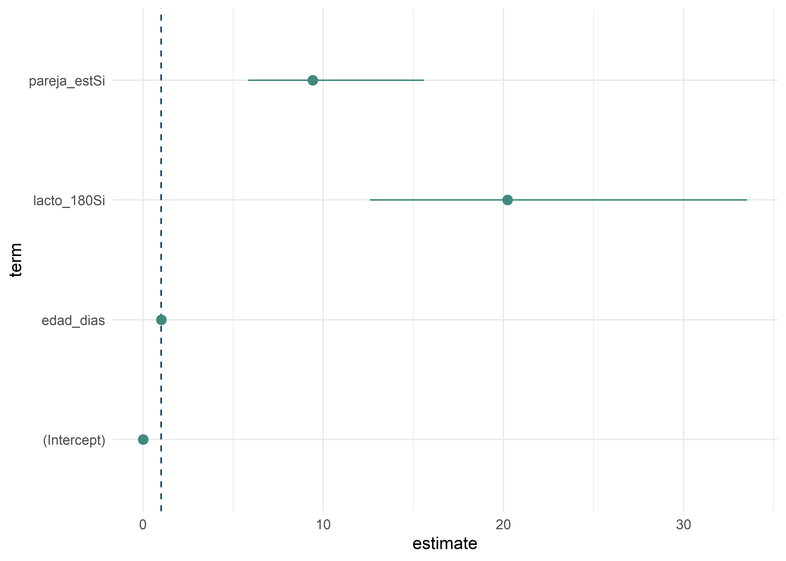
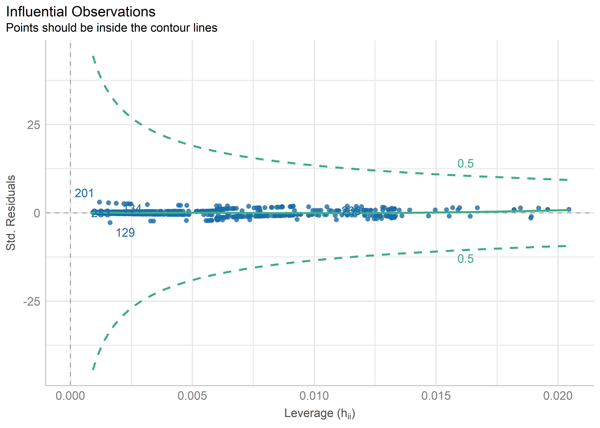

Regresión logística
Este material es parte de la Unidad 4 del Curso de Epidemiología - Nivel Avanzado del Instituto Nacional de Epidemiología “Dr. Juan H. Jara” - ANLIS
Regresión logística by Andrea Silva, Christian Ballejo y Tamara Ricardo is licensed by CC BY-NC 4.0 ![]()
![]()
![]()
Introducción
Cuando la variable dependiente es dicotómica o binaria, es decir, tiene dos categorías mutuamente excluyentes (éxito/fracaso; sí/no; positivo/negativo, etc.), los modelos de regresión lineal no son el abordaje más adecuado para el análisis. Consideremos un evento de salud que puede ocurrir o no (variable dependiente). Por ejemplo:
Un paciente hospitalizado muere/no muere antes del alta.
Un niño nace con/sin una malformación congénita.
Un sujeto operado se infecta/no se infecta en el postoperatorio.
Un niño camina/no camina a los 11 meses.
Una droga mejora/no mejora los síntomas depresivos.
Teniendo en cuenta que nuestra variable respuesta es dicotómica:
\(Y = 1 \rightarrow\) Si el hecho ocurre
\(Y = 0 \rightarrow\) Si el hecho no ocurre
Si representáramos los datos con una función lineal, obtendríamos el siguiente gráfico:
Matemáticamente, la función exponencial representa mejor esta relación:
La regresión logística se utiliza en los casos en que la variable dependiente es binaria, mientras que las variables independientes pueden ser de cualquier tipo (categóricas, dicotómicas, numéricas discretas o continuas). En vez de la ecuación de la recta, ahora tenemos otra ecuación que expresa la variable respuesta (\(Y\)) en función de la/las variables independientes. Esta ecuación, en realidad, expresa la probabilidad de que ocurra un hecho en función de ciertas variables que se presumen relevantes.
La expresión analítica es:
\[ P(Y=1)_x=\frac{1}{1+e^{(-\alpha-\beta_1X_1-\beta_2X_2-\dots-\beta_kX_k)}} \]
Para comprender lo que significan los coeficientes \(\beta\) del modelo, vamos a hacer algunas operaciones matemáticas. Comenzaremos dividiendo ambos miembros de la ecuación por \(1-P_{(Y=1)}\), lo que se denomina transformación logística:
\[ \frac{P(Y=1)_x}{1-P(Y=1)_x}=\frac{\frac{1}{1+e^{(-\alpha-\beta_1X_1-\beta_2X_2-\dots-\beta_kX_k)}}}{1-\frac{1}{1+e^{(-\alpha-\beta_1X_1-\beta_2X_2-\dots-\beta_kX_k)}} } \]
Si ahora aplicamos logaritmo natural (\(ln\)) a ambos miembros de la ecuación, y aplicamos propiedades de los logaritmos, nos queda:
\[ ln\bigg[\frac{P_x}{1-P_x}\bigg] = \alpha + \sum\beta_ix_i \]
Si observamos el término que está entre corchetes, recordaremos que el cociente entre la probabilidad que un suceso ocurra, y la probabilidad de que no ocurra, es lo que conocemos como Odds, entonces:
\[ ln(Odds) = \alpha+\sum\beta_ix_i \]
Si despejamos Odds de la ecuación anterior, podemos concluir entonces que:
\[ Odds = e^{(\alpha+\sum\beta_ix_i)} \]
Para comprender mejor cómo se interpretarán los coeficientes en la regresión logística, supongamos que queremos modelar la probabilidad de que un evento ocurra, \(P_{(Y=1)}\), en función de una única variable independiente dicotómica, que toma el valor 0 cuando la condición está ausente (\(x=0\)) y el valor 1 cuando está presente (\(x=1\)). Entonces:
Para \(x=1\)
\[ Odds_{evento/expuestos}=e^{(\alpha+\beta)} \]
Para \(x=0\)
\[ Odds_{evento/expuestos}=e^{(\alpha)} \]
Entonces, si queremos calcular el odds-ratio (OR):
\[ OR = \frac{e^{(\alpha+\beta)}}{e^\alpha}=e^\beta \]
Por lo tanto:
\[ ln\; OR = \beta \]
De esta forma, vemos que \(\beta\) = incremento del logaritmo del OR por cada unidad de incremento de \(x\).
Extendiendo el razonamiento para la regresión logística múltiple, es decir cuando modelamos en función de más de una variable independiente, volvemos a la ecuación:
\[ ln(Odds) = \alpha + \sum\beta_ix_i \]
Donde cada \(\beta_i\): Incremento en log-odds para una unidad de incremento en \(x_i\) con todas las otras \(x_i\)s constantes.
Incluimos esta deducción para facilitar la comprensión del tema, pero para quienes el lenguaje matemático les es adverso, pueden hacer un “acto de fe” y quedarse con las conclusiones.
Al igual que hicimos en RLM, exploraremos el significado de una salida de R para modelos de regresión logística (Rlog), antes de comenzar a modelar:
Call:
glm(formula = camina ~ edad_meses + lacto_180, family = binomial(),
data = datos)
Coefficients:
Estimate Std. Error z value Pr(>|z|)
(Intercept) -7.02459 0.54972 -12.78 <2e-16 ***
edad_meses 0.39349 0.03566 11.04 <2e-16 ***
lacto_180Si 3.08217 0.22467 13.72 <2e-16 ***
---
Signif. codes: 0 '***' 0.001 '**' 0.01 '*' 0.05 '.' 0.1 ' ' 1
(Dispersion parameter for binomial family taken to be 1)
Null deviance: 1107.23 on 799 degrees of freedom
Residual deviance: 593.57 on 797 degrees of freedom
AIC: 599.57
Number of Fisher Scoring iterations: 5donde:
Call: es la fórmula del modelo,Estimate: muestra los coeficientes \(\beta\) estimados para el intercepto (\(\beta_0\)) y cada una de las variables explicativas (\(\beta_i\)),Std. Error: es el error estándar de cada coeficiente,z value: son los coeficientes del test de Wald,Pr (>|z|): los p-valores para el test de Wald,
En el último párrafo encontramos:
Null deviance: devianza del modelo nulo,Residual deviance: devianza del modelo actual,AIC: Criterio de Información de Akaike.
Profundizaremos ahora en lo que significan algunos de estos puntos.
Test de Wald
En forma similar al test \(F\) parcial de la RLM, el test de Wald testea la hipótesis nula:
\[ H_0 : \beta_i = 0 \]
Hemos expresado el marco de la prueba de hipótesis en términos de la pendiente \(\beta_i\) porque esta formulación es similar a la que usamos en la regresión lineal. Sin embargo, los resultados de la regresión logística se suelen expresar en términos de odds-ratio (OR).
Una pendiente de 0 es equivalente a un OR de 1, por lo tanto, a menudo expresamos la hipótesis nula de interés como “la razón de probabilidades es 1”. Esto implica que las dos probabilidades son iguales y que la variable explicativa no tiene capacidad predictiva. Es importante recordar que en la regresión logística, los coeficientes \(\beta\) no se interpretan directamente de la salida del modelo, sino que debemos calcular su exponencial para obtener el efecto sobre el odds-ratio.
Máxima verosimilitud
Mientras que en la regresión lineal múltiple (RLM) los coeficientes \(\beta\) se obtenían por el método de los mínimos cuadrados, en la regresión logística (Rlog) se obtienen mediante el método de máxima verosimilitud (ML, por su nombre en inglés, Maximum Likelihood). El fundamento de esta técnica radica en utilizar la información disponible de los datos de la muestra para seleccionar el valor del parámetro que maximiza la probabilidad de observar los resultados muestrales. La ML, entonces, se calcula mediante un proceso iterativo.
Por lo tanto, una medida adecuada para evaluar la concordancia del modelo con los datos sería el producto de todas las probabilidades (predichas por el modelo), que los \(n\) sujetos de la muestra realmente tengan la condición observada. Es decir, un buen modelo sería el que asigne una probabilidad de 1 (\(p = 1\)) a cada sujeto que realmente tenga la condición y de 0 (\(p = 0\)) a cada sujeto libre de ella, correspondiendo a una ML de 1. Por el contrario, un modelo deficiente tendría una verosimilitud cercana a 0. En consecuencia, la proximidad de la verosimilitud a 1 expresa cuán eficiente ha sido el ajuste realizado para modelar la realidad.
Deviance
La deviance (\(D\)), también conocida como devianza o distancia, se define como:
\[ D = -2lnV \]
Donde \(V\) es la verosimilitud del modelo.
Dado que, como explicamos anteriormente, \(V < 1\), su logaritmo siempre será negativo, haciendo que la devianza sea siempre un número positivo. El grado de ajuste de un modelo será mejor cuanto más próxima a 1 es la verosimilitud y, en consecuencia, cuanto más cercana a cero sea la devianza.
Al ajustar el modelo se calculan dos devianzas: la correspondiente al “modelo nulo” (\(D_0\)), que es aquel en que no se ha incorporado ninguna variable independiente, y la \(D_f\) del modelo. La diferencia (o cociente) entre estas dos devianzas mide la “contribución” que hacen las variables incorporadas al modelo:
\[ -2lnV_0 - (-2lnV_f) \]
La \(D_0\) es siempre mayor que la de cualquier modelo ampliado. Esto es razonable, ya que el modelo nulo es mucho menos complejo (no incorpora información de variables “explicativas”) y, por lo tanto, tendrá una capacidad predictiva inferior.
Likelihood Ratio Test
El LRT utiliza la diferencia entre la probabilidad de obtener los valores observados con el modelo logístico creado y las probabilidades de hacerlo con un modelo sin relación entre las variables. Para calcular esto, evalúa la significancia de la diferencia de residuos entre el modelo con predictores y el modelo nulo (sin predictores), lo cual es equivalente a la devianza (\(D\)).
\[ D_0 - D = -2lnV_0 + 2lnV = -2ln(V_0-V) = -2ln\bigg(\frac{V_0}{V}\bigg) \]
Donde \(V_0/V\) es el Likelihood Ratio.
El Likelihood Ratio Test, evalua la significancia de incorporar variables al modelo, comparándola con el modelo nulo. El estadístico sigue una distribución \(\chi^2\) con grados de libertad equivalentes al número de predictores en el modelo.
Criterio de Información de Akaike
El Criterio de Información de Akaike (AIC) es una medida de la calidad relativa de un modelo estadístico, para un conjunto dado de datos. Se define como:
\[ AIC= 2k – 2ln(D) \]
Donde,
\(k\): número de parámetros del modelo.
\(D\): devianza del modelo.
El AIC proporciona un método para la selección de modelos, donde valores menores de AIC indican un mejor ajuste del modelo a los datos.
Comparación de modelos
Para comparar dos o más modelos de regresión logística, se pueden utilizar las siguientes técnicas:
AIC: El primer término de la ecuación del AIC penaliza por la inclusión de variables en el model (\(2k\)), mientras que el segundo compensa por la bondad de ajuste (\(2ln(D)\)). Por lo tanto, dado un conjunto de modelos para los datos, el modelo preferido es aquel con el valor mínimo de AIC.
En R, realizamos la comparación con la función
AIC():df AIC mod1 3 599.5655 mod2 2 852.5270Likelihood Ratio Test: Este test permite comparar dos modelos evaluando la significancia de la diferencia de devianzas. El estadístico tiene una distribución \(\chi^2\) con grados de libertad iguales a la diferencia en el número de parámetros entre los dos modelos comparados.
En R, realizamos la comparación con la función
test_lrt()del paqueteperformance:# Likelihood-Ratio-Test (LRT) for Model Comparison (ML-estimator) Name | Model | df | df_diff | Chi2 | p --------------------------------------------- mod1 | glm | 3 | | | mod2 | glm | 2 | -1 | 254.96 | < .001La función
anova()también permite comparar modelos por su diferencia de devianzas:Analysis of Deviance Table Model 1: camina ~ edad_meses + lacto_180 Model 2: camina ~ edad_meses Resid. Df Resid. Dev Df Deviance Pr(>Chi) 1 797 593.57 2 798 848.53 -1 -254.96 < 2.2e-16 *** --- Signif. codes: 0 '***' 0.001 '**' 0.01 '*' 0.05 '.' 0.1 ' ' 1
Calidad de ajuste
De forma análoga al Coeficiente de Determinación (\(R^2\)) utilizado en la Regresión Lineal, se han desarrollado varios coeficientes para estimar la proporción de variación de la variable dependiente explicada por las variables independientes en modelos de Regresión Logística.
En R, podemos calcular estos coeficientes utilizando el paquete performance:
Coeficiente de McFadden:
r2_mcfadden(mod1)# R2 for Generalized Linear Regression R2: 0.464 adj. R2: 0.462Coeficiente de Cox y Snell:
r2_coxsnell(mod1)Cox & Snell's R2 0.4738034Coeficiente de Nagelkerke:
r2_nagelkerke(mod1)Nagelkerke's R2 0.632214El coeficiente de Nagelkerke es una versión corregida del coeficiente de Cox y Snell, cuyo valor máximo es menor a 1 incluso para un modelo perfecto, corrigiendo así la tendencia de subestimación del coeficiente \(R^2\).
Coeficiente de Tjur:
r2_tjur(mod1)Tjur's R2 0.5368622Calcula el Coeficiente de Discriminación (\(D\)) para modelos lineales generalizados con variable respuesta binaria. También podemos obtenerlo usando la función general
r2()del paqueteperformance.
Sin embargo, ninguno de estos coeficientes sirve para medir la calidad de ajuste del modelo. Para evaluar esto, usaremos el test de Hosmer-Lemeshow, que compara la probabilidad predicha por el modelo con la probabilidad observada en la muestra. Este test calcula un estadístico de distribución \(\chi^2\) con \(n-2\) grados de libertad, utilizando varios grupos basados en los deciles de las probabilidades predichas.
En R, podemos calcularlo con la función performance_hosmer() del paquete performance:
performance_hosmer(mod1)# Hosmer-Lemeshow Goodness-of-Fit Test
Chi-squared: 9.661
df: 8
p-value: 0.290En un test de bondad de ajuste, la hipótesis nula siempre afirma que el modelo propuesto se ajusta bien a los datos observados. Por lo tanto, un p-valor superior a 0.05 implica que lo observado se ajusta suficientemente bien a lo esperado bajo el modelo.
Capacidad predictiva del modelo
Otro aspecto a evaluar en un modelo de Rlog es su capacidad de discriminación, es decir, la habilidad del modelo para distinguir entre individuos en los que ocurre el evento y aquellos en los que no. Una medida común de esta discriminación es el área bajo la curva ROC (Receiver Operating Characteristic), que se construye utilizando las probabilidades predichas por el modelo.
Para evaluar la efectividad del modelo en la clasificación de observaciones, se puede construir una tabla de clasificación que cruza el verdadero valor de la observación (1 o 0) con la predicción del modelo. Como el modelo de Rlog estimará probabilidades en el rango de 0 a 1, tendremos que elegir un punto de corte en forma arbitraria. Por ejemplo, podríamos decidir que probabilidades estimadas mayores a 0.5 sean indicativas de que el evento ha ocurrido, mientras que probabilidades menores o iguales a 0.5 indiquen que el evento no ha ocurrido.
La capacidad predictiva de un modelo de Regresión Logística se resume utilizando los conceptos de sensibilidad y especificidad. Quienes trabajen en áreas relacionadas al diagnóstico estarán más familiarizados con estos conceptos.
Sensibilidad: Probabilidad de que el modelo prediga correctamente que el evento ha ocurrido cuando realmente ha ocurrido.
\[ P(\hat{y} = 1|y = 1) \]
Especificidad: Probabilidad de que el modelo prediga correctamente que el evento no ha ocurrido cuando realmente no ha ocurrido.
\[ P(\hat{y}=0|y=0) \]
La curva ROC es un gráfico que representa la sensibilidad en función de 1 menos la especificidad. Si vamos modificando los valores del valor de corte y representamos la sensibilidad (en el eje Y) frente a 1 – especificidad (en el eje X) tenemos la curva ROC. Cuanto mayor sea el área bajo esta curva, mejores serán las predicciones del modelo.

Esta curva representa, para todos los pares posibles de individuos formados por uno en el que ocurrió el evento y otro en el que no, la proporción de aquellos para los cuales el modelo predice una mayor probabilidad de haber experimentado el evento.
En resumen
Para evaluar un modelo de Rlog, deberíamos observar:
- Coeficientes de determinación : % de variabilidad explicada por el modelo.
- Test de Hosmer‐Lemeshow : bondad de ajuste, diferencia entre los valores predichos por el modelo y los valores observados en la muestra.
- Comparación de modelos por AIC, LRT o ANOVA.
- Curva ROC : capacidad predictiva (especialmente cuando el propósito de la Rlog es predictivo).
- Intervalos de confianza (exactitud del coeficiente).
Ejemplo práctico en lenguaje R
Modelos lineales generalizados
La regresión logística forma parte de la familia de modelos lineales generalizados (GLM por su nombre en inglés, Generalized Linear Models), utilizados para predecir la probabilidad de que ocurra un evento binario (como infectado/no infectado, enfermo/no enfermo, sobreviviente/fallecido, etc.) en función de una o más variables independientes. Los GLM extienden los modelos de regresión lineales al permitir el uso de distribuciones no normales de errores (como binomiales, Poisson, gamma, entre otras) y varianzas no constantes. Estos modelos se caracterizan por una estructura de errores específica y una función de enlace que conecta la variable respuesta con la(s) variable(s) independiente(s).
En el caso de la regresión logística, donde la variable respuesta es binaria (0, 1), la estructura de errores pertenece a la familia de distribución binomial. La función de enlace típica para linealizar la relación entre la variable respuesta y la(s) variable(s) independiente(s) es la función logit, que es el logaritmo natural del odds-ratio (OR). Esta función de enlace transforma la escala de probabilidades (de 0 a 1) a una escala lineal (de \(-\infty\) a \(+\infty\)), lo que facilita la modelización de la relación entre las variables independientes y la variable respuesta binaria.
Construcción del modelo en R
El ajuste de un modelo de regresión logística en R se realiza utilizando la función glm(), que es capaz de modelar la mayoría de los GLMs:
glm(formula, family = binomial(link = "logit"), data)Formula: Especifica la relación entre la variable dependiente y las variables independientes en el modelo. Sigue la estructura estándar:
\[ variable\_dependiente \sim variable\_indep_1 + variable\_indep_2 +\dots+ variable\_indep_n \]
Family: Se refiere a la familia de distribuciones y la función de enlace utilizada para ajustar el modelo. Las opciones comunes incluyen:
gaussian(): Utilizada para variables dependientes continuas con distribución normal. El enlace predeterminado esidentity, lo cual es análogo a ajustar un modelo de RLM. Puede emplear también enlaceslog, einverse.binomial(): Utilizada para variables dependientes binarias (0, 1). El enlace predeterminado eslogit, que es el más común en la regresión logística. También admite enlaces comoprobit,cauchit,log, ycloglog.poisson(): Usada para variables dependientes numéricas discretas. El enlace predeterminado es el logaritmo (log), y también admiteidentityysqrt.Otras familias como
Gamma(),inverse.gaussian(),quasi(),quasipoisson(), yquasibinomial()para diferentes distribuciones de errores que no abordaremos en el curso.
Si la función de enlace no se especifica, se utiliza el enlace canónico (predeterminado) para cada familia. Por ejemplo, si omitimos el argumento link = "logit", de todas maneras quedaría definido ese mismo enlace para la familia binomial.
Data: Nombre del dataframe que contiene las variables utilizadas en el modelo.
Salida del modelo de regresión logística
Al igual que con la regresión lineal, los resultados del ajuste realizado con la función glm() se pueden obtener mediante la función summary(). La sintaxis es la siguiente:
summary(nombre_modelo)Donde:
Call: Muestra la fórmula del modelo especificada.Deviance Residuals: Proporciona estadísticas de los residuos de devianza, que incluyen la mediana, mínimo, máximo y percentiles 25-75 obtenidos en la última iteración del modelo.Coefficients: Presenta los coeficientes del intercepto y de cada variable independiente, acompañados de sus errores estándar, valores z (estadístico de Wald) y los correspondientes p-valores.Al aplicar a estos coeficientes la función
exp(), que representa la función inversa del logaritmo natural, se obtiene el Odds Ratio (OR). Esto implica que los coeficientes de las variables independientes se interpretan como el OR de que ocurra el evento para cada incremento de la variable independiente, manteniendo constantes las demás variables independientes.Null deviance: Devianza del modelo nulo.Residual deviance: Devianza del modelo ajustado.AIC: Criterio de Información de Akaike.Number of Fisher Scoring iterations: Número de iteraciones realizadas durante el proceso de estimación de parámetros del modelo.
Este resumen es generado a partir del objeto de regresión resultante de la función glm(), el cual pertenece a las clases “glm” y “lm”. Además de summary(), se pueden acceder a otros componentes del objeto de regresión (al que llamaremos modelo) usando la notación de dólar ($), como:
modelo$coefficients: Vector de coeficientes del modelo.modelo$residuals: Vector de residuos del modelo.modelo$fitted.values: Vector de valores ajustados, calculados a partir de los predictores lineales transformados por la función de enlace inversa.modelo$family: Devuelve la familia de distribución y función de enlace utilizadas en el modelo.modelo$deviance: Devianza del modelo ajustado, que es -2 veces el logaritmo de la verosimilitud máxima.modelo$aic: Valor del Criterio de Información de Akaike (AIC) del modelo ajustado.modelo$null.deviance: Devianza del modelo nulo que contiene solo la constante.
Estos componentes proporcionan información detallada sobre el ajuste del modelo de regresión logística y son útiles para evaluar su calidad y interpretar los resultados obtenidos.
Gestión de variables dicotómicas
Decíamos que el modelo con enlace logit es un modelo de regresión típico:
\[ Y = f(X + E) \]
donde la variable respuesta (variable aleatoria \(Y\)) es dicotómica o binaria (toma dos valores: 0 y 1), habitualmente sobre si nuestra unidad de análisis tiene una característica (1) o no la tiene (0).
Nuestras variables dicotómicas pueden tener originalmente formatos variados y sus categorías también pueden definirse con etiquetas diferentes. Por ejemplo, podemos tener variables dicotómicas con formato lógico (+/-, TRUE/FALSE), con formato caracter (Si/No, Vivo/Muerto, etc.) o con formato numérico codificado (0-1, 1-2 o cualquier combinación personalizada de códigos).
En R las variables categóricas que utilizamos como dependientes en estos modelos corresponden convenientemente al tipo de datos factor. Recordemos que un factor es, interna y técnicamente, una variable numérica compuesta de enteros sucesivos a partir de 1. Cada entero es un nivel o categoría de la variable y está acompañado de una etiqueta que nos facilita recordar a qué categoría corresponde.
Los modelos binomiales asumen las variables dicotómicas codificándolas como 0 y 1, lo cuál podría ser problemático si, como numéricos, los factores comienzan con 1. Como la estructura de los factores es conocida por las funciones que estiman modelos logit, estas funciones convierten internamente la variable categórica/factor en una variable codificada como 0/1, sin que el usuario tenga que hacer nada.
Por lo tanto, no es necesario recodificar la variable o convertirla en dummy, esto se procesa de manera transparente para el usuario. Lo único que debemos asegurarnos es que la variable sea factor y que el nivel de referencia sea la ausencia de la característica (por ejemplo, enfermedad = No).
Debemos usar la función levels() de R base para consultar los niveles o categorías de un factor e identificar el primer nivel del factor, que será el nivel de referencia en el modelo, es decir, \(Y=0\).
Podemos modificar estos niveles de referencia mediante la función relevel() de R base o con fct_rev() de tidyverse, cuando estos se encuentren invertidos.
# Factor con dos categorías
factor <- factor(c("1", "0", "1", "1", "0"))
# Cambio nivel de referencia en R base
relevel(factor, ref = "1")[1] 1 0 1 1 0
Levels: 1 0# Cambio nivel de referencia en tidyverse
fct_rev(factor)[1] 1 0 1 1 0
Levels: 1 0Este procesamiento es extensivo a las variables categóricas (dicotómica o politómicas) que se incluyen en los modelos de regresión como explicativas. En tidyverse, podemos cambiar los niveles de referencia de un factor con más de dos categorías con la función fct_relevel().
# Factor con más de dos categorías
factor <- factor(c("CONF", "DESC", "SOSP", "CONF", "DESC", "PROB"))
# Niveles por defecto
levels(factor)[1] "CONF" "DESC" "PROB" "SOSP"# Pongo DESC como nivel de referencia
fct_relevel(factor, "DESC", after = 0)[1] CONF DESC SOSP CONF DESC PROB
Levels: DESC CONF PROB SOSPAjuste del modelo
Una vez estimados los parámetros a través de la función glm(), la tarea se centra en evaluar la “importancia” de cada variable para el modelo. Esta evaluación se realiza mediante contrastes de hipótesis, como el test de Wald y el test de la razón de verosimilitud (LRT).
El test de Wald lo visualizamos cuando ejecutamos summary() del modelo. Aparece detrás de cada variable predictora en la columna z value, y el p-valor correspondiente se encuentra en la columna Pr(>|z|). Este valor es similar al valor \(t\) de la salida en las regresiones lineales y se utiliza para determinar la significación de la variable dentro del modelo. La interpretación es flexible y común a las situaciones conocidas: p-valores por debajo de 0,05 (p < 0,1 siendo tolerantes) indican que la variable aporta al modelo.
Por otra parte, la razón de verosimilitud (\(G^2\)) surge de restar la deviance de un modelo y con más o menos variables predictoras y sirve para determinar si hay una diferencia significativa entre incluir o no ciertas variables. Los valores de devianza que surgen del resumen de un modelo se encuentran en la salida bajo el título Null deviance, para el modelo nulo y Residual deviance para el modelo con los predictores seleccionados.
El cálculo a partir de un modelo de regresión sería:
mod1$null.deviance - mod1$deviance[1] 513.6643En este ejemplo estamos restando la deviance del modelo nulo menos la deviance del modelo con la o las variables, lo que nos calcula la razón de verosimilitud. La diferencia entre ambas es que anova() nos muestra una tabla de análisis detallada donde aparecen cada una de las variables que integra el modelo con sus respectivas devianzas.
Selección de modelos
En un modelo que incluye una cantidad determinada de variables, es posible que no todas ellas sean relevantes para el problema. En tal caso, se deben detectar las variables que menos aportan al modelo para decidir sobre su exclusión y así obtener un modelo más simple.
Es fundamental definir qué se entiende por “variables relevantes” porque la relevancia no puede ser vista solamente desde el punto estadístico. El marco conceptual es esencial en el proceso de selección de variables, especialmente si la finalidad del modelo es analítica. La elección debe basarse tanto en el conocimiento del área de estudio como en la estadística.
Algunos investigadores actúan como si los métodos estadísticos pudieran reemplazar el conocimiento sobre el tema que tratan, abusando de regresiones donde la técnica no distingue el tipo de asociación o la significación estadística que puede ser irrelevante clínica, biológica o socialmente.
La estadística ofrece varios procedimientos para la selección de modelos de regresión logística que, respetando el marco conceptual en el que se trabaja, se ajusten adecuadamente a los datos con el número más reducido posible de variables. Estos procedimientos no difieren mucho de los vistos en la regresión lineal múltiple, aunque algunos de los estadísticos que ayudan a realizar la selección son distintos.
Para ejemplificar, utilizaremos una tabla de datos denominada caminar.txt, que contiene observaciones de un estudio de casos y controles donde se evaluó a 800 niños, con el objetivo de identificar qué factores se asociaban al desarrollo de la marcha.
Las variables consideradas fueron:
camina: si al momento de la entrevista caminaban (1, 0)edad_meses: a qué edad habían comenzado a caminar (medida en meses)edad_dias: a qué edad habían comenzado a caminar (medida en días)pareja_est: si la madre tenía pareja estable (Si, No)lacto_180: si había tomado pecho al menos 6 meses (Si, No)
Comencemos cargando en R la base de datos y los paquetes que utilizaremos:
### Carga paquetes
library(gtsummary) # Tablas de coeficientes y regresiones simples
library(performance) # Chequea supuestos
library(skimr) # Explora datos
library(tidyverse) # Manejo de datos
### Carga datos
datos <- read.csv2("caminar.txt")
## Explora datos
glimpse(datos)Rows: 800
Columns: 6
$ id <int> 1, 2, 3, 4, 5, 6, 7, 8, 9, 10, 11, 12, 13, 14, 15, 16, 17, …
$ camina <int> 0, 1, 1, 1, 1, 0, 1, 1, 0, 0, 0, 0, 1, 0, 0, 1, 1, 0, 0, 1,…
$ edad_dias <int> 265, 318, 554, 389, 529, 574, 578, 582, 398, 289, 336, 476,…
$ edad_meses <int> 8, 10, 18, 12, 17, 19, 19, 19, 13, 9, 11, 15, 16, 9, 9, 18,…
$ pareja_est <chr> "No", "Si", "No", "Si", "Si", "No", "Si", "Si", "No", "No",…
$ lacto_180 <chr> "Si", "Si", "No", "Si", "Si", "No", "Si", "Si", "Si", "Si",…Observamos la estructura de los datos, donde vemos los tipos de variables. Enteros <int> para las numéricas y caracter <chr> para las categóricas.
Primeramente coercionamos los tipos character a factor.
datos <- datos |>
mutate(camina = factor(camina),
pareja_est = factor(pareja_est),
lacto_180 = factor(lacto_180))Como las categorías de las tres variables convertidas son “0” y “1” o “Si” y “No”, y el orden automático del lenguaje R es alfabético, el nivel de referencia será “0” y “No”. Confirmémoslo mediante la visualización de los niveles:
levels(datos$camina) [1] "0" "1"levels(datos$pareja_est) [1] "No" "Si"levels(datos$lacto_180)[1] "No" "Si"En segundo lugar efectuamos una breve descripción univariada usando el paquete skimr.
datos |>
select(-id) |> # Omitimos identificador de paciente
skim() | Name | select(datos, -id) |
| Number of rows | 800 |
| Number of columns | 5 |
| _______________________ | |
| Column type frequency: | |
| factor | 3 |
| numeric | 2 |
| ________________________ | |
| Group variables | None |
Variable type: factor
| skim_variable | n_missing | complete_rate | ordered | n_unique | top_counts |
|---|---|---|---|---|---|
| camina | 0 | 1 | FALSE | 2 | 1: 419, 0: 381 |
| pareja_est | 0 | 1 | FALSE | 2 | No: 467, Si: 333 |
| lacto_180 | 0 | 1 | FALSE | 2 | Si: 454, No: 346 |
Variable type: numeric
| skim_variable | n_missing | complete_rate | mean | sd | p0 | p25 | p50 | p75 | p100 | hist |
|---|---|---|---|---|---|---|---|---|---|---|
| edad_dias | 0 | 1 | 424.20 | 104.30 | 240 | 334 | 424 | 516.25 | 600 | ▇▆▇▆▇ |
| edad_meses | 0 | 1 | 13.67 | 3.47 | 8 | 11 | 14 | 17.00 | 20 | ▇▅▇▅▆ |
A continuación iniciamos un proceso iterativo manual tipo forward basado en la selección de modelos propuesto en el capítulo 8 del libro de Silva Ayçaguer (1995).
Paso 1: Se ajustan tantos modelos de regresión logística simple como posibles variables explicativas tengamos. Dos de las variables (edad_dias y edad_meses) son la misma expresada en unidades diferentes, por lo que intentaremos quedarnos con la que explique más y a su vez sea estadísticamente significativa..
# edad en días
mod1 <- glm(camina ~ edad_dias,
data = datos,
family = binomial)
# edad en meses
mod2 <- glm(camina ~ edad_meses,
data = datos,
family = binomial)
# pareja estable
mod3 <- glm(camina ~ pareja_est,
data = datos,
family = binomial)
# lactancia
mod4 <- glm(camina ~ lacto_180,
data = datos,
family = binomial)Se calcula el Likelihood Ratio test de cada uno de ellos.
mod1$null.deviance - mod1$deviance [1] 258.118mod2$null.deviance - mod2$deviance [1] 258.7028mod3$null.deviance - mod3$deviance [1] 246.6692mod4$null.deviance - mod4$deviance[1] 352.0365Se identifica el mayor de estas \(G^2\) (mod4) y se evalúa si es significativo
test_lrt(mod4)# Likelihood-Ratio-Test (LRT) for Model Comparison (ML-estimator)
Name | Model | df | df_diff | Chi2 | p
---------------------------------------------------
Null model | glm | 1 | | |
Full model | glm | 2 | 1 | 352.04 | < .001Paso 2: Como la variable lacto_180 es significativa, se incorpora como primer variable al modelo y a continuación se generan modelos de dos variables independientes combinando esta variable con cada una de las otras.
# mod 4 + edad en días
mod5_1 <- glm(camina ~ lacto_180 + edad_dias,
data = datos,
family = binomial)
# mod4 + edad en meses
mod5_2 <- glm(camina ~ lacto_180 + edad_meses,
data = datos,
family = binomial)
# mod4 + pareja estable
mod5_3 <- glm(camina ~ lacto_180 + pareja_est,
data = datos,
family = binomial)Se identifica la pareja para la cual la deviance (\(-2lnV_f\)) es menor.
mod5_1$deviance [1] 592.4274mod5_2$deviance [1] 593.5655mod5_3$deviance[1] 614.9587En este caso, el mod5_1 con las variables lacto_180 y edad_dias tiene una deviance de 592.43, menor a los otros dos modelos.
Se evalúa si el agregado de la variable edad_dias es significativa respecto al modelo con la variable lacto_180 sola.
test_lrt(mod4, mod5_1)# Likelihood-Ratio-Test (LRT) for Model Comparison (ML-estimator)
Name | Model | df | df_diff | Chi2 | p
-----------------------------------------------
mod4 | glm | 2 | | |
mod5_1 | glm | 3 | 1 | 162.77 | < .001Paso 3: Como es significativa, se incorpora al modelo y a continuación se agrega la tercer y última variable posible en el modelo (dado que la variable edad_meses es la misma que edad_dias que ya está incorporada).
mod6 <- glm(camina ~ lacto_180 + edad_dias + pareja_est,
data = datos,
family = binomial)Se evalúa la significación del agregado. Si es significativo el modelo quedaría con las tres variables, de lo contrario quedan las dos iniciales.
test_lrt(mod5_1, mod6)# Likelihood-Ratio-Test (LRT) for Model Comparison (ML-estimator)
Name | Model | df | df_diff | Chi2 | p
----------------------------------------------
mod5_1 | glm | 3 | | |
mod6 | glm | 4 | 1 | 94.71 | < .001El proceso iterativo continúa de haber más variables para agregar.
También se pueden utilizar métodos automáticos, al igual que vimos en la regresión lineal múltiple, partiendo por ejemplo de un modelo saturado y aplicando la función step(). Recuerden que estos modelos automáticos los utilizamos para comparar los procesos manuales y que se basan en únicamente en iteraciones con procesos matemático-estadísticos sin tener en cuenta la “relevancia” conceptual de las variables y las relaciones entre ellas.
modelo_saturado <- glm(camina ~ .-id,
data = datos,
family = binomial)
modelo_step <- step(modelo_saturado, direction = "both")Start: AIC=507.72
camina ~ (id + edad_dias + edad_meses + pareja_est + lacto_180) -
id
Df Deviance AIC
- edad_meses 1 497.72 505.72
- edad_dias 1 498.63 506.63
<none> 497.72 507.72
- pareja_est 1 592.43 600.43
- lacto_180 1 691.11 699.11
Step: AIC=505.72
camina ~ edad_dias + pareja_est + lacto_180
Df Deviance AIC
<none> 497.72 505.72
+ edad_meses 1 497.72 507.72
- pareja_est 1 592.43 598.43
- edad_dias 1 614.96 620.96
- lacto_180 1 691.58 697.58En este caso la selección automática utiliza el AIC que funciona de manera similar a la regresión lineal y el seleccionado termina siendo el que tiene el AIC más bajo.
summary(modelo_step)
Call:
glm(formula = camina ~ edad_dias + pareja_est + lacto_180, family = binomial,
data = datos)
Coefficients:
Estimate Std. Error z value Pr(>|z|)
(Intercept) -7.596812 0.619037 -12.272 <2e-16 ***
edad_dias 0.012168 0.001272 9.566 <2e-16 ***
pareja_estSi 2.242393 0.249994 8.970 <2e-16 ***
lacto_180Si 3.007014 0.249097 12.072 <2e-16 ***
---
Signif. codes: 0 '***' 0.001 '**' 0.01 '*' 0.05 '.' 0.1 ' ' 1
(Dispersion parameter for binomial family taken to be 1)
Null deviance: 1107.23 on 799 degrees of freedom
Residual deviance: 497.72 on 796 degrees of freedom
AIC: 505.72
Number of Fisher Scoring iterations: 6En este ejemplo el modelo automático es coincidente con el forward manual que realizamos.
Aplicando AIC() a la serie de modelos que fuimos realizando de forma manual y automática podemos comparar:
AIC(mod4) [1] 759.1933# modelo solo con lacto_180
AIC(mod5_1) [1] 598.4274# modelo con lacto_180 y edad_dias
AIC(mod6) [1] 505.7191# modelo con lacto_180, edad_dias y pareja_est
AIC(modelo_step) # modelo automático idem mod6 [1] 505.7191El modelo final tiene el AIC más bajo (505.7).
Al igual que en RLM el paquete performance muestra en una tabla la comparación de índices AIC entre otros, para los modelos definidos.
compare_performance(mod4, mod5_1, mod6, metrics = "AIC")# Comparison of Model Performance Indices
Name | Model | AIC (weights)
------------------------------
mod4 | glm | 759.2 (<.001)
mod5_1 | glm | 598.4 (<.001)
mod6 | glm | 505.7 (>.999)Si añadimos el argumento rank = TRUE nos muestra los modelos ordenados por AIC:
compare_performance(mod4, mod5_1, mod6, metrics = "AIC", rank = TRUE)# Comparison of Model Performance Indices
Name | Model | AIC weights | Performance-Score
------------------------------------------------
mod6 | glm | 1.00 | 100.00%
mod5_1 | glm | 7.39e-21 | 7.39e-19%
mod4 | glm | 9.09e-56 | 0.00%Calidad de ajuste
Existen diversas formas de medir la calidad de ajuste de un modelo de regresión logística. De manera global, esta calidad puede ser evaluada a través de coeficientes de determinación \(R^2\), probabilidades estimadas o test estadísticos.
Los coeficientes de determinación calculan el grado de “explicación de la variabilidad de la variable de respuesta” conseguido con el modelo a partir de las variables independientes. Como vimos anteriormente, pueden estimarse con funciones del paquete performance:
r2_mcfadden(mod6) # R2 for Generalized Linear Regression
R2: 0.550
adj. R2: 0.549r2_coxsnell(mod6) Cox & Snell's R2
0.5332159 r2_nagelkerke(mod6) Nagelkerke's R2
0.7114904 r2_tjur(mod6)Tjur's R2
0.6177795 Estos coeficientes alcanzan el valor 1 cuando el vaticinio es perfecto (esto significa que el modelo atribuye probabilidad 1 a aquellos sujetos de la muestra que efectivamente tuvieron el evento y valores iguales a 0 a quienes no lo tuvieron) y se aproximan a 0 en la medida que las probabilidades atribuidas por el modelo disten más de 1 y 0, respectivamente.
Respecto a test estadísticos, la prueba de razón de verosimilitud (LRT), recientemente utilizada en el proceso de selección de modelos, es una de las que podemos utilizar basada en la devianza.
# R base
anova(mod6, test = "Chisq")Analysis of Deviance Table
Model: binomial, link: logit
Response: camina
Terms added sequentially (first to last)
Df Deviance Resid. Df Resid. Dev Pr(>Chi)
NULL 799 1107.23
lacto_180 1 352.04 798 755.19 < 2.2e-16 ***
edad_dias 1 162.77 797 592.43 < 2.2e-16 ***
pareja_est 1 94.71 796 497.72 < 2.2e-16 ***
---
Signif. codes: 0 '***' 0.001 '**' 0.01 '*' 0.05 '.' 0.1 ' ' 1# performance
test_lrt(mod6) # Likelihood-Ratio-Test (LRT) for Model Comparison (ML-estimator)
Name | Model | df | df_diff | Chi2 | p
---------------------------------------------------
Null model | glm | 1 | | |
Full model | glm | 4 | 3 | 609.51 | < .001Observamos que las dos funciones son complementarias. Mientras test_lrt() nos muestra la razón de verosimilitud entre el modelo completo y el nulo en forma global, la función anova() nos detalla en la tabla de análisis de varianzas la deviance entre cada paso del modelo, es decir, a partir de incorporar una a una las variables con su respectiva significación.
Entre las pruebas de bondad de ajuste basadas en la agrupación de las probabilidades estimadas bajo el modelo de regresión, usaremos el test de Hosmer y Lemeshow. Si bien existen variados paquetes que proveen esta, nosotros utilizaremos la función performance_hosmer() del paquete performance.
performance_hosmer(mod6)# Hosmer-Lemeshow Goodness-of-Fit Test
Chi-squared: 10.660
df: 8
p-value: 0.222El test de bondad de ajuste de Hosmer y Lemeshow nos da un p-valor para el mod6 de 0.222, por lo que concluimos que el modelo ajusta adecuadamente los datos (no hay diferencia significativa entre los datos observados en relación a los esperados).
Curva ROC
En R podemos graficar la curva ROC, que es una herramienta más específica de modelos predictivos, para comparar diferentes modelos. La función performance_roc() del paquete performance se aplica de la siguiente manera:
performance_roc(mod6) |>
# Genera gráfico
plot() +
# Cambia color de fondo
theme_minimal()Cuanto mayor es el área bajo la curva, más eficiente es el modelo. Si el modelo tiene capacidad predictiva nula la curva coincide con la diagonal principal del cuadrado, y el área bajo la curva toma su valor mínimo de 0,5. Por el contrario, un modelo perfecto tiene una curva ROC con área 1.
Analíticamente podemos visualizar el valor del área bajo la curva (AUC de Area under the curve) e incorporar los intervalos de confianza al 95% con la función performance_accuracy():
performance_accuracy(mod6)# Accuracy of Model Predictions
Accuracy (95% CI): 93.93% [92.00%, 95.36%]
Method: Area under CurveLos valores de AUC se pueden interpretar siguiendo el criterio:
Valor | Capacidad predictiva |
|---|---|
0.5-0.6 | Mala |
0.6-0.75 | Regular |
0.75-0.9 | Buena |
0.9-0.97 | Muy buena |
0.97-1 | Excelente |
Nuestro modelo logra un AUC cercano a 0.94, que está dentro de la categoría muy buena.
Cálculo del OR
Los valores de odds-ratio se obtienen como el resultado de calcular el valor del número \(e\) elevado a los coeficientes estimados del modelo (exponencial o inversa del logaritmo natural).
El código de R para aplicar esta función al mod6 (con redondeo de 2 decimales) es:
coef(mod6) |>
exp() |>
round(2) (Intercept) lacto_180Si edad_dias pareja_estSi
0.00 20.23 1.01 9.42 Cuando estamos frente a una regresión logística múltiple, como en este caso, nos permite obtener las odds-ratio ajustadas por otras variables.
La interpretación sería:
La probabilidad de caminar de los bebés que fueron amamantados por al menos 6 meses fue 20 veces mayor (OR = 20.23) que la de los bebés que no fueron amamantados ese tiempo, ajustada por las variables edad (en días) y pareja estable.
La probabilidad de caminar de los bebés cuyas madres tenían pareja estable fue aproximadamente 9 veces mayor (OR = 9.42) que la de los bebés cuyas madres no tenían pareja estable, ajustada por las variables edad (en días) y lactancia a los 6 meses.
La probabilidad de caminar de los bebés se incrementa un 1% por cada día más de vida (OR = 1.01), ajustada por las variables lactancia a los 6 meses y pareja estable.
Podemos también, incorporar intervalos de confianza de los OR agregando la función confint().
confint(mod6) |>
exp() |>
round(2) 2.5 % 97.5 %
(Intercept) 0.00 0.00
lacto_180Si 12.60 33.52
edad_dias 1.01 1.01
pareja_estSi 5.84 15.59La función tbl_regression() del paquete gtsummary nos permite generar tablas de los coeficientes exponenciados, su intervalo de confianza y p-valor para cada variable del modelo:
tbl_regression(mod6, exponentiate = T)Characteristic |
OR 1 |
95% CI 1 |
p-value |
|---|---|---|---|
| lacto_180 | |||
| No | — | — | |
| Si | 20.2 | 12.6, 33.5 | <0.001 |
| edad_dias | 1.01 | 1.01, 1.01 | <0.001 |
| pareja_est | |||
| No | — | — | |
| Si | 9.42 | 5.84, 15.6 | <0.001 |
| 1
OR = Odds Ratio, CI = Confidence Interval |
|||
Si quisiéramos representar gráficamente el modelo de regresión con ggplot2, primero deberíamos convertir a dataframe la salida del modelo usando la función tidy() del paquete broom (el mismo es parte de tidyverse pero no se carga por defecto):
# Convierte la salida del modelo a dataframe
mod6_df <- mod6 |>
broom::tidy(exponentiate = T, conf.int = T)
# exploramos nombres de columnas
glimpse(mod6_df)Rows: 4
Columns: 7
$ term <chr> "(Intercept)", "lacto_180Si", "edad_dias", "pareja_estSi"
$ estimate <dbl> 5.020492e-04, 2.022690e+01, 1.012242e+00, 9.415835e+00
$ std.error <dbl> 0.619036797, 0.249097076, 0.001271965, 0.249994360
$ statistic <dbl> -12.271988, 12.071653, 9.566011, 8.969774
$ p.value <dbl> 1.280691e-34, 1.491078e-33, 1.111105e-21, 2.971241e-19
$ conf.low <dbl> 1.412254e-04, 1.259760e+01, 1.009796e+00, 5.836578e+00
$ conf.high <dbl> 0.001606812, 33.524717902, 1.014853465, 15.587192405A continuación, creamos un gráfico en ggplot2 los siguientes parámetros para los ejes x e y:
# Genera gráfico
mod6_df |>
ggplot(mapping = aes(x = estimate,
y = term,
xmin = conf.low,
xmax = conf.high)) Al ejecutar el código anterior nos aparecerá una ventana vacía en el panel de gráficos de R, procederemos a añadir la primer capa al gráfico, representando la línea vertical de la significancia con el comando geom_vline():
# Genera gráfico
mod6_df |>
ggplot(mapping = aes(x = estimate,
y = term,
xmin = conf.low,
xmax = conf.high)) +
# añade línea vertical
geom_vline(xintercept = 1,
linetype = "dashed",
color = "#073966") Ahora añadimos los estimadores para cada variable independiente y sus intervalos de confianza al 95% usando el comando geom_pointrange(). Si quisiéramos cambiar el gris del fondo del gráfico por un fondo en blanco añadimos el comando theme_minimal():
# Genera gráfico
mod6_df |>
ggplot(mapping = aes(x = estimate,
y = term,
xmin = conf.low,
xmax = conf.high)) +
# añade línea vertical
geom_vline(xintercept = 1,
linetype = "dashed",
color = "#073966") +
# añade estimadores
geom_pointrange(color = "#418A80") +
# cambia color de fondo
theme_minimal()
Residuales
Como en toda regresión, podemos examinar los residuos para asegurarnos que el modelo se ajusta bien a los datos observados.
El principal propósito de examinar los residuales es:
- Detectar los puntos en los que el modelo se ajusta mal.
- Detectar los puntos que ejercen una influencia excesiva sobre el modelo.
Para buscar los casos conflictivos podemos fijarnos en lo siguiente:
Mirar los residuales estandarizados y asegurarnos que no hay valores atípicos.
Observar el gráfico Residuals vs Leverage incluído en la salida de
plot(modelo)donde se presentan distancias de Cook.
Los residuales se almacenan dentro del objeto de regresión del modelo bajo el nombre residuals. Se puede extraer los residuales estandarizados con la función rstandar() y luego clasificar por su valor absoluto y cuantificar.
datos$rstandar <- rstandard(mod6)
datos |>
mutate(clasif = case_when(
between(abs(rstandar),2, 2.5) ~ "> 2",
between(abs(rstandar),2.5, 3) ~ "> 2.5",
between(abs(rstandar),3, +Inf) ~ "> 3")) |>
count(clasif) |>
mutate(prop = n/sum(n)) clasif n prop
1 > 2 16 0.02000
2 > 2.5 6 0.00750
3 > 3 1 0.00125
4 <NA> 777 0.97125Observamos que las proporciones de valores residuales estandarizados por encima de 2.5 y 3 son muy pequeños. Solo hay un caso mayor de 3 que podríamos revisar.
Podemos obtener el gráfico de las distancias de Cook usando R base o performance:
# R base
plot(mod6, which = 5)# Performance
check_outliers(mod6) |>
plot()
De forma similar a la evaluación de residuales de la regresión lineal, estaremos atentos a valores periféricos en la esquina superior e inferior. Esos lugares, fuera de las líneas punteadas, son los lugares donde los puntos influyentes aparecen.
En este ejemplo no se observa ninguno, por lo que en definitiva, no pareciese existir observaciones influyentes que tengan efecto sobre el modelo.
Colinealidad
Se dice que existe colinealidad o multicolinealidad cuando dos o más de las covariables del modelo mantienen una relación lineal.
Normalmente, se tolera una multicolinealidad moderada, es decir, una mínima correlación entre covariables. Si esta correlación fuese significativa, su efecto sería el incremento exagerado de los errores estándar y, en ocasiones, del valor estimado para los coeficientes de regresión, lo que hace las estimaciones poco creíbles. Podemos verificar este supuesto con el estadístico VIF (Variance Inflation Factor) utilizando el paquete performance:
# Test de colinealidad
check_collinearity(mod6)# Check for Multicollinearity
Low Correlation
Term VIF VIF 95% CI Increased SE Tolerance Tolerance 95% CI
lacto_180 1.12 [1.06, 1.25] 1.06 0.89 [0.80, 0.94]
edad_dias 1.08 [1.03, 1.22] 1.04 0.92 [0.82, 0.97]
pareja_est 1.05 [1.01, 1.23] 1.02 0.95 [0.81, 0.99]# Gráfico de colinealidad
check_collinearity(mod6) |>
plot()Los resultados para cada una de las variables independientes es cercano a 1, por lo que descartamos problemas de multicolinealidad.
Interacción
En este punto aplica el mismo concepto y explicación que la expresada en el material de RLM de la Unidad 3.
Ante la pregunta de la existencia de una variable modificadora de efecto dentro de la regresión múltiple, podemos realizar un análisis comparativo separando por estratos o subgrupos. El objetivo es identificar si la relación de la variable respuesta y una variable independiente cambia de acuerdo al nivel de otra variable independiente.
omemos, por ejemplo, las variables lacto_180 y pareja_est. Ambas son estadísticamente significativas dentro del modelo mod6. Construyamos dos modelos que contengan lacto_180 y edad_dias, aplicados en dos subgrupos de la tabla datos: uno con niños de madres con pareja estable y otro con madres sin pareja estable.
# Crear subgrupos
con_pareja <- datos %>% filter(pareja_est == "Si")
sin_pareja <- datos %>% filter(pareja_est == "No")
# Ajustar modelos para cada subgrupo
mod_con_pareja <- glm(camina ~ lacto_180 + edad_dias,
family = binomial(link = "logit"),
data = con_pareja)
mod_sin_pareja <- glm(camina ~ lacto_180 + edad_dias,
family = binomial(link = "logit"),
data = sin_pareja)Ahora generemos las tablas de coeficientes para cada modelo con la función tbl_regression() de gtsummary
# Comparar coeficientes entre los dos modelos
tab_con_pareja <- tbl_regression(mod_con_pareja, exponentiate = T)
tab_sin_pareja <- tbl_regression(mod_sin_pareja, exponentiate = T)Podemos colocar las tablas una al lado de la otra con la función tbl_merge() del mismo paquete:
tbl_merge(
tbls = list(tab_con_pareja, tab_sin_pareja),
tab_spanner = c("Pareja estable", "Sin pareja estable")
)Characteristic |
Pareja estable |
Sin pareja estable |
||||
|---|---|---|---|---|---|---|
OR 1 |
95% CI 1 |
p-value |
OR 1 |
95% CI 1 |
p-value |
|
| lacto_180 | ||||||
| No | — | — | — | — | ||
| Si | 55.1 | 21.8, 163 | <0.001 | 13.2 | 7.65, 23.5 | <0.001 |
| edad_dias | 1.01 | 1.01, 1.02 | <0.001 | 1.01 | 1.01, 1.01 | <0.001 |
| 1
OR = Odds Ratio, CI = Confidence Interval |
||||||
Al analizar los coeficientes de los modelos ajustados para cada subgrupo, podemos identificar si la relación entre lacto_180 y camina, y entre edad_dias y camina, varía significativamente según el estado de la variable pareja_est. Observamos que los coeficientes de edad_dias se mantienen constantes en ambos estratos, mientras que los OR de lacto_180 son diferentes, esto indica que pareja_est actúa como modificadora de efecto.
En R, la forma de incluir y probar un término de interacción dentro de un modelo es mediante el uso del símbolo de multiplicación (*) en lugar del +. Esto provoca que se tengan en cuenta cada una de las variables individualmente y la interacción entre ellas.
mod_interaccion <- glm(camina ~ edad_dias + lacto_180 * pareja_est,
data = datos,
family = binomial)Comparo los modelos con y sin interacción usando performance:
compare_performance(mod6, mod_interaccion, metrics = "common")# Comparison of Model Performance Indices
Name | Model | AIC (weights) | BIC (weights) | Tjur's R2 | RMSE
---------------------------------------------------------------------------
mod6 | glm | 505.7 (0.104) | 524.5 (0.548) | 0.618 | 0.309
mod_interaccion | glm | 501.4 (0.896) | 524.8 (0.452) | 0.622 | 0.307Observamos que el modelo con interacción tiene mejor AIC y \(R^2\) que el mod6. Visualicemos ahora sus coeficientes:
tbl_regression(mod_interaccion, exponentiate = T)Characteristic |
OR 1 |
95% CI 1 |
p-value |
|---|---|---|---|
| edad_dias | 1.01 | 1.01, 1.02 | <0.001 |
| lacto_180 | |||
| No | — | — | |
| Si | 13.4 | 7.79, 24.1 | <0.001 |
| pareja_est | |||
| No | — | — | |
| Si | 4.89 | 2.43, 9.97 | <0.001 |
| lacto_180 * pareja_est | |||
| Si * Si | 3.67 | 1.32, 10.8 | 0.015 |
| 1
OR = Odds Ratio, CI = Confidence Interval |
|||
El término de interacción es significativo e implica el exceso de la variabilidad de los datos que no puede ser explicada por la suma de las variables consideradas. En este caso la interacción es positiva (sexiste “sinergia” entre las variables) con un OR de 3.67.
Tamaño de la muestra y número de variables independientes
En el ámbito epidemiológico, es fundamental asegurarse de que el tamaño de la muestra sea adecuado para obtener estimaciones confiables en un modelo de regresión logística. Una regla general para determinar el tamaño de muestra es la fórmula propuesta por Freeman (1987), que establece que el tamaño de muestra debería ser 10 veces el número de variables independientes a estimar, más uno.
\[ n = 10*(k+1) \]
donde:
\(n\) es el tamaño de la muestra.
\(k\) es el número de variables independientes.
Además, se recomienda que para que la variable dicotómica de respuesta sea fiable, debe haber al menos 10 casos para cada uno de los valores posibles (0 y 1). Esto asegura que las estimaciones sean confiables y que el modelo no esté sesgado.
Para nuestro ejemplo:
Número de observaciones: 800
Número de variables independientes en
mod_interaccion: 4
Aplicando la fórmula de Freeman:
n_min = 10 * (4 + 1)
n_min[1] 50Dado que el modelo incluye 4 variables independientes, la fórmula sugiere que se necesita un mínimo de 50 observaciones. En nuestro caso, el tamaño de la muestra es 800, lo cual supera ampliamente el requisito mínimo de 50 observaciones, confirmando que tenemos un tamaño de muestra adecuado para el modelo propuesto.
Verifiquemos ahora si existen al menos 10 casos para cada valor de la variable respuesta:
datos |>
count(camina) camina n
1 0 381
2 1 419La base de datos tiene 419 casos donde la variable de respuesta es 1 y 381 casos donde es 0. Esto cumple con la recomendación de tener al menos 10 casos para cada valor de la variable dicotómica de respuesta, garantizando que las estimaciones sean confiables.
Bibliografía
Alexander, Lorraine K, Brettania Lopes, Kristen Ricchetti-masterson, and Karin B Yeatts. 2015. “Second Edition of the ERIC Notebook: Risk and Rate Measures in Cohort Studies.” ERIC Notebook.
“EPIDAT 4.2 - Consellería de Sanidade - Servizo Galego de Saúde.” n.d. https://www.sergas.es/Saude-publica/EPIDAT-4-2.
Escuela Nacional de Sanidad (ENS). Instituto de Salud Carlos III. Ministerio de Ciencias e Innovación. Madrid. 2009. Manual Docente de La Escuela Nacional de Sanidad: Método Epidemiológico.
Field, Andy, Jeremy Miles, and Zoë Field. 2014. Discovering statistics using R. Repr. Los Angeles, CA, USA: Sage.
Freeman, Daniel H. 1987. Applied categorical data analysis. New York: M. Dekker.
Hernández-Ávila, Mauricio. 2011. Epidemiología: diseño y análisis de estudios. Buenos Aires: Editorial Médica Panamericana.
Lüdecke, Daniel, Mattan S. Ben-Shachar, Indrajeet Patil, Philip Waggoner, and Dominique Makowski. 2021. “Performance: An r Package for Assessment, Comparison and Testing of Statistical Models” 6: 3139. https://doi.org/10.21105/joss.03139.
Ortega Calvo, Manuel, and Aurelio Cayuela Domínguez. 2002. “Regresión Logística No Condicionada y Tamaño de Muestra: Una Revisión Bibliográfica.” Revista Española de Salud Pública 76: 85–93.
R Core Team. 2024. “R: A Language and Environment for Statistical Computing.” https://www.r-project.org/.
Rothman, Kenneth J. 2012. Epidemiology: an introduction. 2. ed. New York, NY: Oxford Univ. Press.
Silva Ayçaguer, Luis Carlos. 1995. “Excursión a La Regresión Logística En Ciencias de La Salud.” Madrid: Díaz de Santos.
Sjoberg, Daniel D., Karissa Whiting, Michael Curry, Jessica A. Lavery, and Joseph Larmarange. 2021. “Reproducible Summary Tables with the Gtsummary Package” 13: 570–80. https://doi.org/10.32614/RJ-2021-053.
Thompson, W. D. 1994. “Statistical analysis of case-control studies.” Epidemiologic Reviews 16 (1): 33–50. https://doi.org/10.1093/oxfordjournals.epirev.a036143.
Waring, Elin, Michael Quinn, Amelia McNamara, Eduardo Arino de la Rubia, Hao Zhu, and Shannon Ellis. 2022. “Skimr: Compact and Flexible Summaries of Data.” https://CRAN.R-project.org/package=skimr.
Wickham, Hadley, Mara Averick, Jennifer Bryan, Winston Chang, Lucy D’Agostino McGowan, Romain François, Garrett Grolemund, et al. 2019. “Welcome to the Tidyverse” 4: 1686. https://doi.org/10.21105/joss.01686.